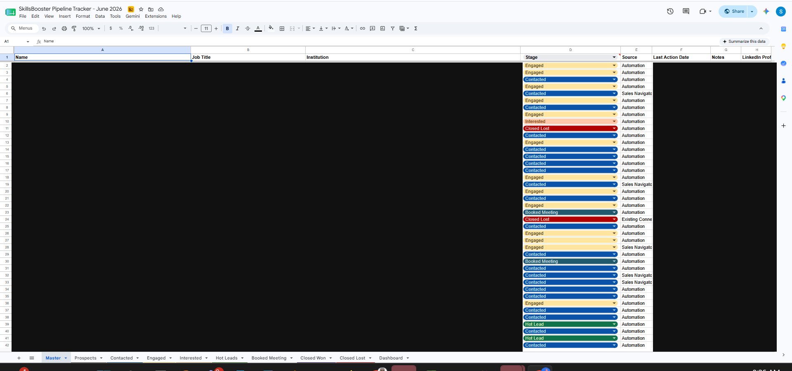

Partnership Lead-Research & Outreach Automation
Four connected n8n workflows support lead research, tracking, personalised message preparation, and follow-up routing. Initial connection requests are automated, while later follow-ups and InMails are reviewed before sending.
The problem
Researching partner organisations and preparing outreach by hand didn't scale. The work was repetitive, easy to lose track of, and slow to keep consistent across many organisations.
My role
I designed and ran the automation from requirements through to testing and iteration. I decided how the four workflows would hand work to each other and where a person should stay in the loop.
What I built — an end-to-end outreach loop
Four connected n8n workflows run the full loop: collect leads from Sales Navigator, write personalised messages, send the connection requests, track responses, and route the right follow-up. Two PhantomBuster phantoms handle the LinkedIn steps, OpenAI writes the copy, and Google Sheets holds the working data.
1 · SCRAPPER — collect leads
liveExports leads from a Sales Navigator search or lead list.
2 · Message Generator — write & send requests
liveFor each lead, OpenAI drafts a tailored connection request, follow-ups and a short summary; the sheet then feeds the LinkedIn Outreach phantom that sends the requests.
3 · Tracker Sync — keep the pipeline current
liveUpdates the trackers and flags who has accepted, replied, or needs a follow-up or InMail.
4 · Messages — route the follow-up
liveChooses a 2nd follow-up for accepted connections, or an Open InMail for the rest.
Main technologies
n8nPhantomBusterOpenAIGoogle SheetsGmailWebhooks
Message quality
The drafting prompts keep a clear, plain, outcome-focused voice for education leaders and avoid marketing clichés, so drafts are consistent and easy to review. Full internal prompts are not shown.
Results and what I learned
- Four previously manual stages — research, tracking, message preparation, and follow-up planning — now run as connected workflows.
- The tracker stays consistent, so it is easier to see where each organisation stands.
Detailed performance measurement is ongoing. I learned that keeping a person in the loop for the final message step is worth it — it protects quality and keeps the outreach genuine.
Pipeline tracking
Every organisation flows through a shared, colour-coded pipeline — Prospect, Contacted, Engaged, Interested, Hot Lead, Booked Meeting and Closed. The view below is redacted: all names, job titles, institutions, notes and LinkedIn URLs are removed, leaving only the pipeline stages and structure.

Evidence
Architecture rebuilt from four live workflows · a redacted pipeline view is shown above; a short demo is available on request